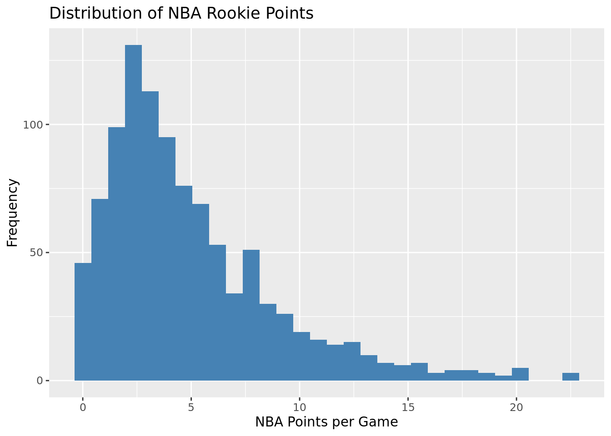
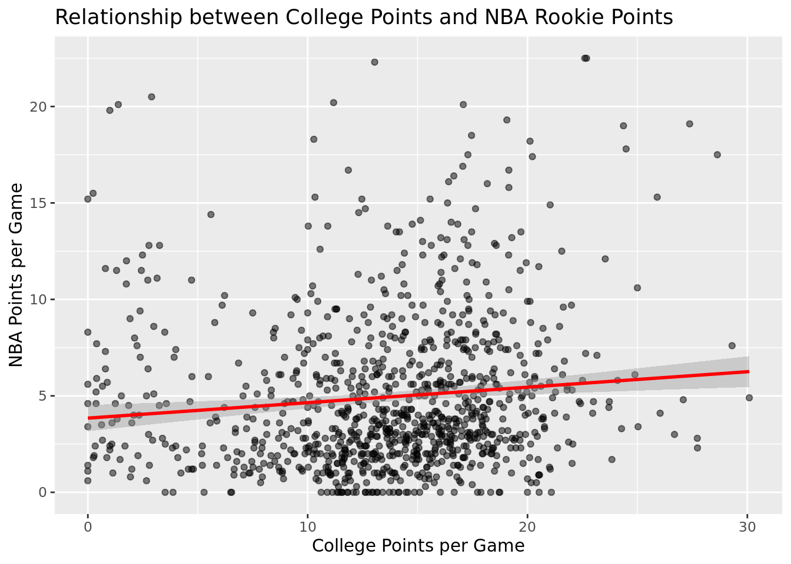

# Load libs
library(dplyr)
library(readr)
library(stringr)
# Reading and processing the college data
college <- read_csv("CollegeBasketballPlayers2009-2021.csv") %>%
mutate(year = as.character(year)) %>%
rename(College_points = pts) %>%
arrange(desc(year)) %>%
distinct(player_name, .keep_all = TRUE) %>%
select(player_name, eFG, conf, TS_per, College_points, year)
# Reading and processing the NBA data
nba <- read_csv("NBA_Player_Stats.csv") %>%
mutate(Year = as.character(Year),
Year = str_split(Year, '-', simplify = TRUE)[, 1]) %>%
arrange(Year) %>%
rename(NBA_points = PTS,
player_name = Player) %>%
distinct(player_name, .keep_all = TRUE) %>%
select(player_name, NBA_points)
# merging
merged_points <- inner_join(college, nba, by = "player_name")Predicting NBA Rookie Success from College Performance
Introduction
Predictive modeling of NBA rookie success based on college performance statistics provides crucial insights for sports analytics. This analysis utilizes historical data to establish relationships between collegiate achievements and professional performance in the NBA, thereby supporting decision-making in sports management.
Research Question
How can NBA rookie success, measured by points per game, be predicted from their college basketball statistics? This study employs statistical modeling techniques to forecast NBA outcomes from detailed collegiate performance metrics.
Data Description
This study employs two primary datasets:
- College Basketball Dataset: Consists of detailed player statistics from NCAA college basketball spanning 2009 to 2021. This dataset includes metrics such as player efficiency ratings and scoring averages.
[Source: https://www.kaggle.com/datasets/adityak2003/college-basketball-players-20092021/data] 2. NBA Player Statistics: Contains performance data for NBA rookies’ first season from 2009 to 2021, focusing on points per game and efficiency metrics.
[Source: https://www.kaggle.com/datasets/raunakpandey030/nba-player-stats]
Key Variables:
College_points: Average points scored per game in the player’s final college season.eFG%: Effective field goal percentage in college.TS%: True shooting percentage in college.NBA_points: Average points per game during the player’s rookie NBA season.
Data Cleaning and Merging Process
The data was meticulously cleaned to ensure consistency and relevance to the study’s goals. This involved: - Renaming columns for clarity. - Filtering records to retain only the last year of college and the first year in the NBA to focus on the transition period. - Removing duplicate entries and normalizing data formats for accurate merging.
library(ggplot2)
# Histogram of NBA Points
ggplot(merged_points, aes(x = NBA_points)) +
geom_histogram(bins = 30, fill = "steelblue") +
labs(title = "Distribution of NBA Rookie Points", x = "NBA Points per Game", y = "Frequency")
# Scatter plot of College Points vs. NBA Points
ggplot(merged_points, aes(x = College_points, y = NBA_points)) +
geom_point(alpha = 0.5) +
geom_smooth(method = "lm", color = "red") +
labs(title = "Relationship between College Points and NBA Rookie Points", x = "College Points per Game", y = "NBA Points per Game")`geom_smooth()` using formula = 'y ~ x'
Methodology
Model Selection Process
The primary objective of this study is to predict NBA rookie success based on their college performance statistics. Given the nature of our response variable (NBA points per game, which is continuous), regression models were considered most appropriate for this analysis.
Initial Model Choices
We initially considered multiple regression models to handle the continuous nature of our target variable: - Linear Regression: Chosen for its simplicity and interpretability. - Multilayer Perceptron (MLP) Regressor: Selected for its ability to capture non-linear relationships that might exist between the predictors and the target.
Predictor Variables
The predictor variables initially included were: - eFG% (Effective Field Goal Percentage) - TS% (True Shooting Percentage) - College_points (Average points per game during the player’s final college season)
These variables were chosen due to their direct relationship with scoring performance, which is our primary measure of NBA success.
Model Enhancement with One-Hot Encoding
To improve the model’s performance, we introduced a categorical variable: - conf (Conference): This variable represents the college conference of each player, which could have an influence on the player’s transition to the NBA due to varying levels of competition across conferences.
One-hot encoding was applied to this categorical variable to convert it into a numerical format that could be used in our regression models. This allowed us to examine the impact of different conferences on NBA success.
Data Splitting
The data was split into training and test sets with a 70-30 ratio, using a random seed for reproducibility (random_state=999). This split was chosen to provide a substantial training set for model development while leaving a sizable portion of data for testing model validity.
Model Fitting and Diagnostics
Each model was trained on the training data set: - Linear Regression and MLP Regressor: Both models were fitted using their respective methods from the scikit-learn library.
Model Evaluation Metrics
To evaluate model performance, we calculated: - Mean Squared Error (MSE) - R-squared (R²)
These metrics provide insights into the accuracy and explanatory power of the models, respectively.
Model Diagnostics and Validation
After fitting the models, we conducted diagnostics to check for: - Homoscedasticity: Ensuring that the residuals have constant variance across predictions. - Normality of Residuals: Checked using Q-Q plots and Shapiro-Wilk tests.
Violations of model assumptions were addressed by considering transformation of predictor variables and adding interaction terms where necessary.
Final Model Selection
The final model selection was based on a combination of: - Performance metrics (lower MSE and higher R²) - Diagnostic results - Simplicity and interpretability for stakeholders